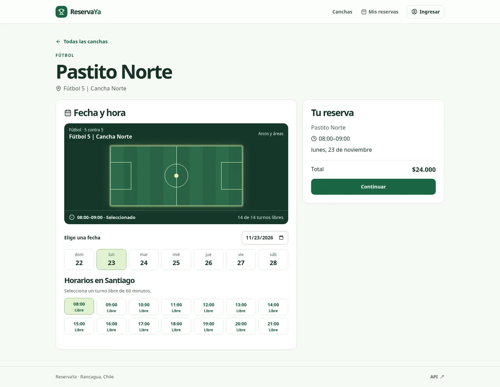

ReservaYa · Operación de un recinto deportivo
Encuentra cancha y reserva tu hora.
Ayuda a un recinto con varias canchas a publicar sus horarios y bloquear franjas por mantenimiento. Los jugadores pueden ver la disponibilidad antes de reservar.
Esta página despierta la app al abrirse; cuando veas «En línea», responde al instante.

Qué puedes probar
- Elige una cancha
Cambia entre fútbol y pádel y compara la disponibilidad en fechas distintas.
- Confirma una franja
La cancha se ilumina al confirmar y la franja queda ocupada.
- Libera el turno
Cancela desde Mis reservas de prueba y comprueba que el horario vuelve a estar disponible.
Prueba guiada
ReservaYa
Interactúa con datos ficticios en este navegador.
¿Qué resuelve la aplicación completa?
Cómo se implementa
React · FastAPI · SQLAlchemy · PostgreSQL
El servidor administra la agenda, los bloqueos y las reservas. PostgreSQL evita dos reservas activas para la misma cancha y hora. Esta demo pública funciona en el navegador con datos ficticios.